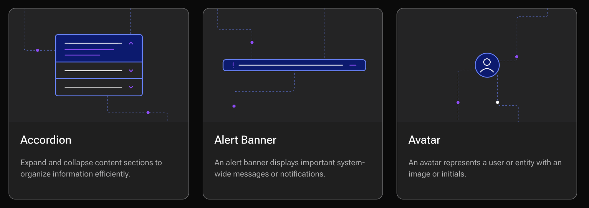
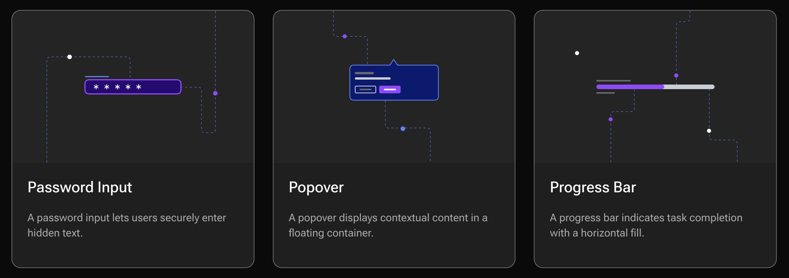
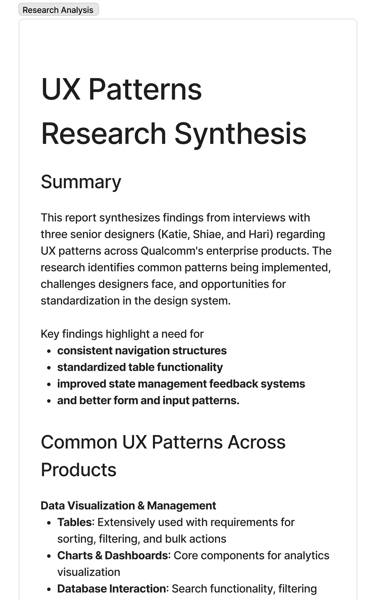
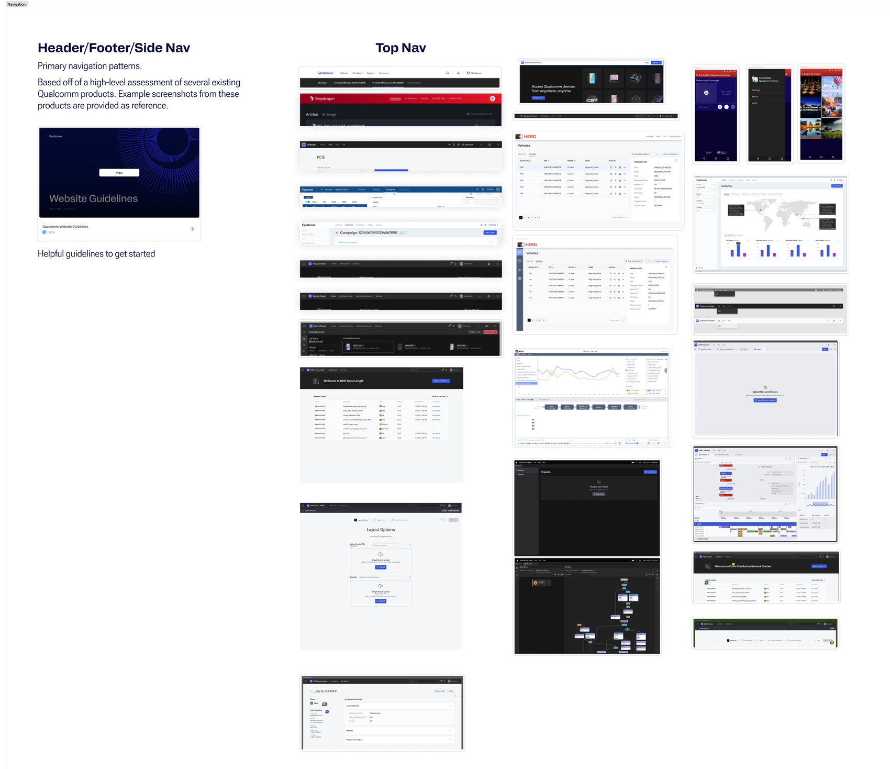
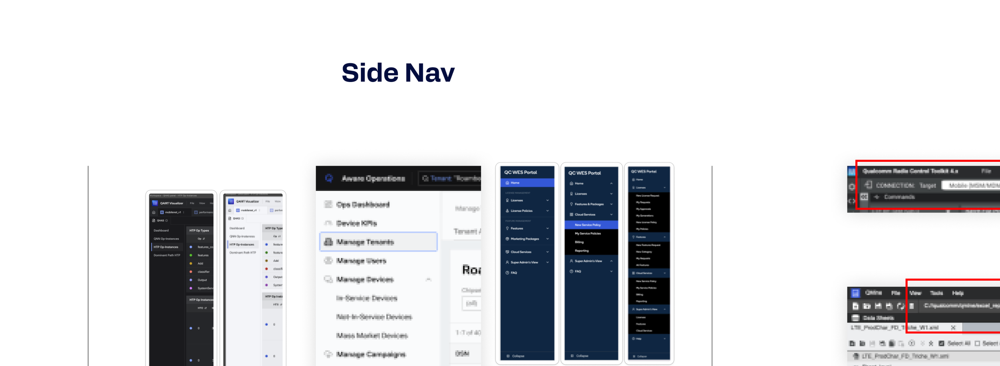
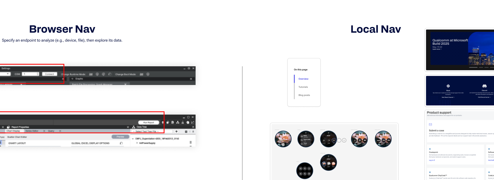
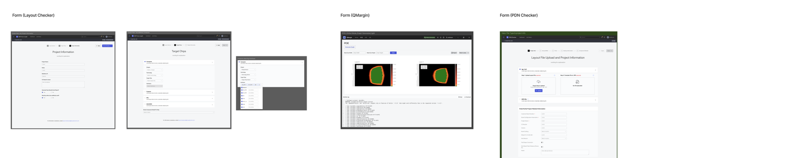

<div class="page" id="page-qds">
<div class="container">

  <div class="cs-header">
    <span class="label lilac">Design Systems</span>
    <h1 style="margin-top:1rem;">Leading Qualcomm's first design system</h1>
    <div class="cs-meta">Qualcomm · Senior (Staff) Product Designer, Design Systems Lead · via Blink · Feb to Sept 2025</div>
    <p class="cs-intro">Qualcomm had no unified design system. Three brands (Qualcomm, Snapdragon, Dragonwing), dozens of product teams, zero shared language. I set the visual direction and wrote the design principles the rest of the team built from, defined the system's taxonomy, owned iconography and documentation architecture, and ran original research to settle which UX patterns the system would ship. The frameworks I created got adopted.</p>
  </div>

  <div class="outcomes">
    <div class="outcome"><div class="num lilac">1,500+</div><div class="desc">Icons shipped with governance</div></div>
    <div class="outcome"><div class="num lilac">60+</div><div class="desc">Components documented</div></div>
    <div class="outcome"><div class="num lilac">120x</div><div class="desc">Writing-effort reduction</div></div>
    <div class="outcome"><div class="num lilac">95%</div><div class="desc">CMS creation time reduction</div></div>
  </div>

  <div class="cs-section">
    <h2>The system is public</h2>
    <p>It shipped, and you can open it: <a href="https://react.qui.qualcomm.com/components/overview" target="_blank" rel="noopener">react.qui.qualcomm.com/components/overview</a>. Every component illustration on that overview is one I drew by hand, which means the documentation is drawn in the same visual language it documents.</p>
    <div class="img-placeholder" style="margin:2rem 0 0;"></div>
    <div class="img-placeholder" style="margin:1rem 0 0;"></div>
    <p class="img-caption">Component illustrations from the published system. Each one is drawn to a shared grid, with the dashed connector lines carrying the same logic across every card.</p>
  </div>

  <div class="cs-section">
    <h2>Defining the taxonomy</h2>
    <p>Before you can build a design system, you need a shared language for what things are. The team had adopted atomic design (Atoms → Molecules → Organisms), but it wasn't enough for what we were seeing. I extended the taxonomy with Templates, UX Flows, and Design Patterns, and the extended model became QDS's organizing principle.</p>
    <p>This wasn't an atomic-design rehash. The addition of UX Flows and Design Patterns as explicit levels acknowledged that Qualcomm's products needed more than component specs. They needed guidance on how components compose into real user experiences. A button is an atom. A search bar is a molecule. "How filtering works across all Qualcomm products" is a pattern and deserved its own place in the hierarchy.</p>
    <p>This taxonomy informed everything downstream: how the documentation was structured, how engineering understood the relationships between parts of the system, and how the team talked about what they were building.</p>
  </div>

  <div class="cs-section">
    <h2>The AI documentation pipeline</h2>
    <p>The math problem: 60+ components that needed full documentation. Manually, that's maybe 12 components in the time we had. The system would launch half-empty.</p>
    <p>I built an AI-in-the-loop documentation pipeline using Claude. The workflow: I created a structured input format that captured a component's props, variants, states, and design intent. Fed that into Claude with carefully engineered prompts. Claude generated a first draft. Human designers reviewed, refined, approved. CMS pages were created from the output.</p>
    <h3>What made it work</h3>
    <ul>
      <li><strong>Structured inputs, not freeform.</strong> The quality of AI output depends entirely on input quality. I designed a template that forced the right information to be captured before generation started.</li>
      <li><strong>Human-in-the-middle, not human-out-of-the-loop.</strong> Every doc was reviewed and refined by a designer. The AI did the heavy lifting. Humans ensured accuracy and voice consistency.</li>
      <li><strong>The process was the product.</strong> I didn't just build the pipeline. I defined the input format, wrote the prompts, established the review process, and trained the team on the workflow. When I left, the team could keep going without me.</li>
    </ul>
    <p>Result: 120x reduction in writing effort, 95% reduction in CMS page creation time, 60+ components documented on schedule. The system launched complete instead of half-built.</p>
  </div>

  <div class="cs-section">
    <h2>1,500+ icons, end-to-end</h2>
    <p>Qualcomm had icons scattered across teams with no standards, no naming conventions, and no process for adding new ones. Marketing used one set. Product used another.</p>
    <p>I owned the icon library from audit to ship. Cataloged every existing icon across both marketing and product design. Established sizing standards and naming conventions. Built a metadata schema so icons could be searchable and filterable. Created a governance workflow for custom icon submissions. Shipped v1 with 1,500+ utility and marketing icons unified across all three brands.</p>
    <div class="image-row" style="margin-top:2rem;">
      <div class="img-placeholder" style="min-height:240px;"></div>
      <div class="img-placeholder" style="min-height:240px;"></div>
      <div class="img-placeholder" style="min-height:240px;"></div>
    </div>
  </div>

  <div class="cs-section">
    <h2>Documentation architecture</h2>
    <p>A design system is only as useful as its documentation site. I designed the complete information architecture: sitemap, content structure, navigation, and page templates. Evaluated CMS options (including Knapsack) before the team decided to build a custom storefront, which I collaborated with engineering to implement.</p>
    <p>Each component page followed a consistent template: overview, usage guidelines, variants, states, accessibility, code reference. This consistency meant that once you learned how to read one component page, you could read them all.</p>
  </div>

  <div class="cs-section">
    <h2>Defining what a pattern is, then which ones the system would ship</h2>
    <p>QDS didn't have an answer to the question "what counts as a UX pattern, and which ones belong in this system." Without that answer, every team picks their own definition and the system fragments before it ships. I owned the work to define both.</p>
    <p>Original research. Interviewed three staff designers and a Head of Design to surface what they were already calling patterns, where they disagreed, and which behaviors caused the most rework. Benchmarked peer documentation systems (Carbon, Material, Polaris, Atlassian) to understand how the industry was framing the problem. Synthesized into a working definition and a candidate taxonomy.</p>
    <div class="img-placeholder" style="margin-top:2rem;"></div>
    <p class="img-caption">Research synthesis, opening section</p>
    <p style="margin-top:2rem;">Tested the taxonomy across current QC products and the shape of what was coming next. Navigation was the biggest cluster · Top Nav, Side Nav, Browser Nav, Local Nav, Marketing Nav each had different rules, different states, different audiences. I deconstructed real product surfaces and mapped them against the proposed taxonomy to validate it survived contact with the actual portfolio.</p>
    <div class="img-placeholder" style="margin-top:2rem;"></div>
    <p class="img-caption">Header / footer / top nav, mapped across shipping products</p>
    <div class="img-placeholder" style="margin-top:2rem;"></div>
    <p class="img-caption">Side nav, including hierarchy depth and collapsed states</p>
    <div class="img-placeholder" style="margin-top:2rem;"></div>
    <p class="img-caption">Browser nav, local nav, marketing nav</p>
    <p style="margin-top:2rem;">Patterns aren't just happy paths. Each pattern got state coverage: forms documented by layout and validation state, tables documented across empty / loading / unauthorized / vague-input states. State coverage is what makes a pattern usable for product teams who would otherwise reinvent the same broken edges.</p>
    <div class="img-placeholder" style="margin-top:2rem;"></div>
    <p class="img-caption">Forms, documented per product and validation state</p>
    <div class="img-placeholder" style="margin-top:2rem;"></div>
    <p class="img-caption">Tables, documented across empty, loading and populated states</p>
    <p style="margin-top:2rem;">Then I presented to the Heads of Design to get buy-in on the definition and the taxonomy. Patterns work doesn't matter until leadership agrees that's how the org is going to talk about patterns going forward. That alignment is what made the pattern library roadmap real instead of a side artifact.</p>
  </div>

  <div class="cs-section">
    <h2>Governance the system needed to survive a distributed team</h2>
    <p>A system without governance is a library that slowly rots. I established review workflows, contribution processes, and quality standards that let distributed teams across multiple time zones and business units contribute without the system losing coherence.</p>
  </div>

  <div class="staff-signal">
    <h4>What this shows</h4>
    <p>Two pillars of staff-level systems work. First: AI as a first-class tool in DS operations (defined the input format, wrote the prompts, set up the review loop, trained the team) so the system could ship complete instead of half-built. Second: original research and taxonomy work that defined the abstraction layer the whole team designed inside of · and the stakeholder management to get Heads of Design to agree on it before it shipped.</p>
  </div>


</div>
</div>
